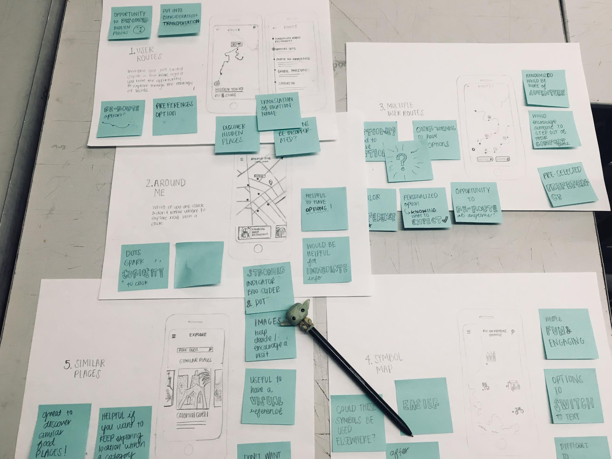
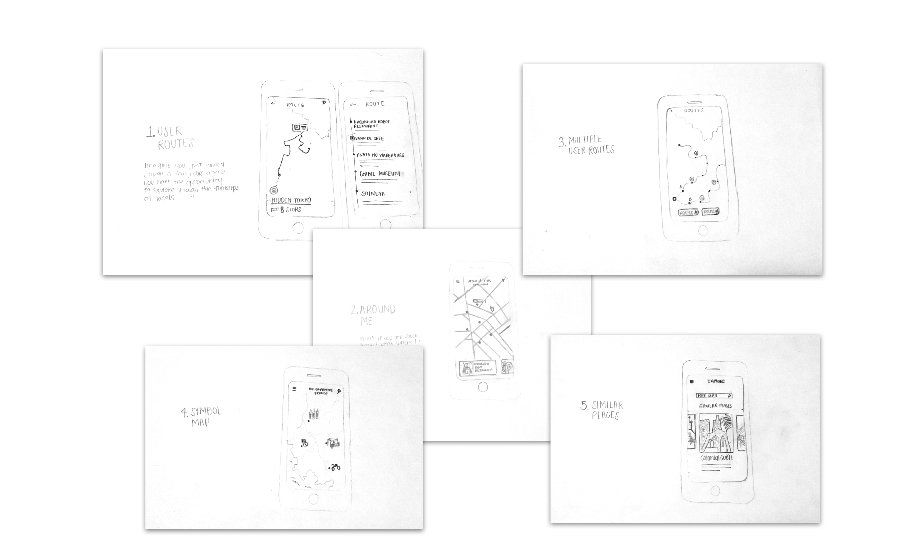
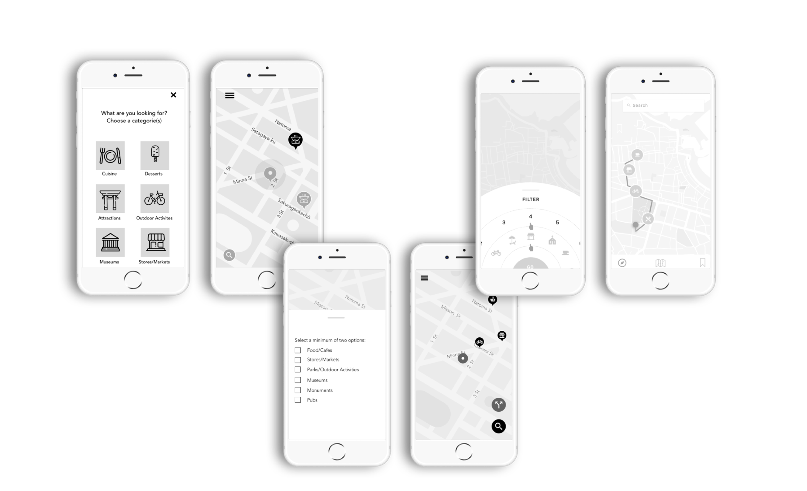

Info
Status:ongoing
Compass is an app that can help individuals discover a city’s hidden gems. Through compass, individuals are able look and track down those tucked away niche spots.
The idea for this project grew from traveling experiences. Some questions that came to mind were ‘What is near me?’ or ‘What am I missing out on?’. As I spoke to different people, I discovered that individuals want to experience the local life. Although touristy spots are a top on the list for most travelers, it seems that individuals also want to discover those special places that may be overlooked.
After receiving valuable insights, I started brainstorming ideas in which I could help individuals discover those hidden spots. My approach was to create the idea of user routes. Users would select what they are interested in exploring. Based on location, a personalized route would be generated. The trail would consist of spots that are local favorites, popular among previous travelers, and other best kept secret spots. The overall idea is to create those special moments and to allow individuals to see a city from multiple perspectives.
If interested in reading more, I have been documenting my process through a Tumblr blog.
Status:ongoing
Compass is an app that can help individuals discover a city’s hidden gems. Through compass, individuals are able look and track down those tucked away niche spots.
The idea for this project grew from traveling experiences. Some questions that came to mind were ‘What is near me?’ or ‘What am I missing out on?’. As I spoke to different people, I discovered that individuals want to experience the local life. Although touristy spots are a top on the list for most travelers, it seems that individuals also want to discover those special places that may be overlooked.
After receiving valuable insights, I started brainstorming ideas in which I could help individuals discover those hidden spots. My approach was to create the idea of user routes. Users would select what they are interested in exploring. Based on location, a personalized route would be generated. The trail would consist of spots that are local favorites, popular among previous travelers, and other best kept secret spots. The overall idea is to create those special moments and to allow individuals to see a city from multiple perspectives.
If interested in reading more, I have been documenting my process through a Tumblr blog.
Compass App




